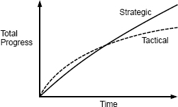

第三章：工作代码是不够的（战略与战术编程）
好的软件设计中最重要的元素之一是您在执行编程任务时所采用的思维方式。许多组织都鼓励采取战术思维方式，着眼于使功能尽快运行。但是，如果您想要一个好的设计，则必须采取更具战略性的方法，在此上花费时间来制作干净的设计并解决问题。本章讨论了从长远来看，为什么战略方法可以产生更好的设计，而实际上却比战术方法便宜。
3.1 战术编程
大多数程序员以我称为战术编程的心态来进行软件开发。在战术方法中，您的主要重点是使某些功能正常工作，例如新功能或错误修复。乍一看，这似乎是完全合理的：还有什么比编写有效的代码更重要的呢？但是，战术编程几乎不可能产生出良好的系统设计。
战术编程的问题是它是短视的。如果您是战术编程人员，那么您将尝试尽快完成任务。也许您有一个艰难的期限。因此，为未来做计划不是优先事项。您不会花费太多时间来寻找最佳设计。您只想尽快使某件事起作用。您告诉自己，可以增加一些复杂性或引入一两个小错误，如果这样可以使当前任务更快地完成，则可以。
这就是系统变得复杂的方式。如上一章所述，复杂度是递增的。不是使系统复杂的特定事物，而是数十或数百个小事物的积累。如果您进行战术编程，则每个编程任务都会带来一些此类复杂性。为了快速完成当前任务，他们每个人似乎都是一个合理的折衷方案。但是，复杂性迅速累积，尤其是如果每个人都在战术上进行编程的时候。
不久之后，某些复杂性将开始引起问题，并且您将开始希望您没有采用这些早期的捷径。但是，您会告诉自己，使下一个功能正常工作比返回并重构现有代码更为重要。从长远来看，重构可能会有所帮助，但是肯定会减慢当前的任务。因此，您需要快速修补程序来解决遇到的任何问题。这只会增加复杂性，然后需要更多补丁。很快代码变得一团糟，但是到现在为止，情况已经很糟糕了，清理它需要花费数月的时间。您的日程安排无法容忍这种延迟，解决一个或两个问题似乎并没有太大的区别，因此您只是在战术上保持编程。
如果您从事大型软件项目的时间很长，我怀疑您在工作中已经看到了战术编程，并且遇到了导致的问题。一旦您沿着战术路线走，就很难改变。
几乎每个软件开发组织都有至少一个将战术编程发挥到极致的开发人员：战术龙卷风。战术龙卷风是一位多产的程序员，他抽出代码的速度比其他人快得多，但完全以战术方式工作。实施快速功能时，没有人能比战术龙卷风更快地完成任务。在某些组织中，管理层将战术龙卷风视为英雄。但是，战术龙卷风留下了毁灭的痕迹。他们很少被将来必须使用其代码的工程师视为英雄。通常，其他工程师必须清理战术龙卷风留下的混乱局面，这使得那些工程师（他们是真正的英雄）的进步似乎比战术龙卷风慢。
成为一名优秀的软件设计师的第一步是要意识到仅工作代码是不够的。引入不必要的复杂性以更快地完成当前任务是不可接受的。最重要的是系统的长期结构。任何系统中的大多数代码都是通过扩展现有代码库编写的，因此，作为开发人员，最重要的工作就是促进这些将来的扩展。因此，尽管您的代码当前必须工作，但您不应将“工作代码”视为主要目标。您的主要目标必须是制作出出色的设计，并且这种设计也会起作用。这是战略计划。
战略性编程需要一种投资心态。您必须花费时间来改进系统的设计，而不是采取最快的方式来完成当前的项目。这些投资会在短期内让您放慢脚步，但从长远来看会加快您的速度，如图 3.1 所示。
一些投资将是积极的。例如，值得花一些时间为每个新类找到一个简单的设计。而不是实施想到的第一个想法，请尝试几种替代设计并选择最简洁的设计。试想一下将来可能需要更改系统的几种方式，并确保设计容易。编写好的文档是主动投资的另一个例子。
3.2 战略规划
成为一名优秀的软件设计师的第一步是要意识到仅工作代码是不够的。引入不必要的复杂性以更快地完成当前任务是不可接受的。最重要的是系统的长期结构。任何系统中的大多数代码都是通过扩展现有代码库编写的，因此，作为开发人员，最重要的工作就是促进这些将来的扩展。因此，尽管您的代码当前必须工作，但您不应将“工作代码”视为主要目标。您的主要目标必须是制作出出色的设计，并且这种设计也会起作用。这是战略计划。
战略性编程需要一种投资心态。您必须花费时间来改进系统的设计，而不是采取最快的方式来完成当前的项目。这些投资会在短期内让您放慢脚步，但从长远来看会加快您的速度，如图 3.1 所示。
一些投资将是积极的。例如，值得花一些时间为每个新类找到一个简单的设计。而不是实施想到的第一个想法，请尝试几种替代设计并选择最简洁的设计。试想一下将来可能需要更改系统的几种方式，并确保设计容易。编写好的文档是主动投资的另一个例子。
其他投资将是被动的。无论您预先投入多少，设计决策中都不可避免地会出现错误。随着时间的流逝，这些错误将变得显而易见。发现设计问题时，不要只是忽略它或对其进行修补。花一些额外的时间来修复它。如果您进行战略性编程，则将不断对系统设计进行小幅改进。这与战术编程相反，在战术编程中，您不断增加一些复杂性，这些复杂性将来会引起问题。
3.3 投资多少？
那么，正确的投资额是多少？大量的前期投资（例如尝试设计整个系统）将不会有效。这是瀑布方法，我们知道它不起作用。随着您对系统的了解，理想的设计趋于零碎出现。因此，最好的方法是连续进行大量小额投资 。我建议您将总开发时间的 10％到 20％用于投资。该金额足够小，不会对您的日程安排产生重大影响，但又足够大，可以随着时间的推移产生重大收益。因此，您的初始项目将比纯战术方法花费 10-20％的时间。额外的时间将带来更好的软件设计，并且您将在几个月内开始体验到这些好处。不久之后，您的开发速度将比战术编程快至少 10–20％。在这一点上，您的投资将免费：您过去投资的收益将节省足够的时间来支付未来投资的费用。您将迅速收回初始投资的成本。图 3.1 说明了这种现象。

图 3.1：一开始，战术性的编程方法将比战略性方法更快地取得进展。但是，在战术方法下，复杂性积累得更快，从而降低了生产率。随着时间的流逝，战略方针会带来更大的进步。注意：此图仅用于定性说明；我不知道对曲线精确形状的任何经验测量。
相反，如果您进行战术编程，则可以将第一个项目完成的速度提高 10％到 20％，但是随着时间的推移，复杂性的累积会降低开发速度。不久之后，您的编程速度至少会降低 10–20％。您将很快退回在开始时保存的所有时间，并且在系统的整个生命周期中，与采用策略性方法相比，您的开发速度将更加缓慢。如果您从未使用过严重降级的代码库，请与有经验的人联系。他们会告诉您不良的代码质量会使开发速度至少降低 20％
3.4 创业与投资
在某些环境中，强大的力量与战略方法背道而驰。例如，早期的初创公司感到巨大的压力，需要尽快发布其早期版本。在这些公司中，甚至 10％至 20％的投资似乎也负担不起。结果，许多初创公司采取了战术性的方法，在设计上花费了很少的精力，而在问题出现时则花费了更少的精力进行清理。他们认为，如果成功，他们将有足够的钱聘请额外的工程师来清理问题，从而使其合理化。
如果您是一家朝着这个方向发展的公司，则应该意识到，一旦代码库变成了意大利面条，几乎是不可能修复的。您可能会为产品的使用寿命付出高昂的开发成本。此外，好的（或坏的）设计的回报很快就会到来，因此战术方法很有可能甚至不会加快您的首个产品发布的速度。
要考虑的另一件事是，公司成功的最重要因素之一就是工程师的素质。降低开发成本的最佳方法是聘请优秀的工程师：他们的成本不会比普通工程师高很多，但生产率却高得多。但是，最好的工程师对良好的设计深感兴趣。如果您的代码库很残酷，那么单词会变得毫无用处，这将使您难以招募。结果，您最终可能会遇到普通的工程师。这将增加您的未来成本，并可能导致系统结构进一步退化。
Facebook 是一个鼓励战术编程的创业公司的例子。多年来，公司的座右铭是“快速行动并打破困境”。鼓励刚大学毕业的新工程师立即深入公司的代码库；工程师在工作的第一周将承诺投入生产是很正常的。从积极的一面来看，Facebook 作为一家赋予员工权力的公司而享有声誉。工程师拥有极大的自由度，并且几乎没有任何规则和限制。
Facebook 作为一家公司已经取得了令人瞩目的成功，但是由于该公司的战术方法，其代码库受到了影响。许多代码不稳定且难以理解，几乎没有注释或测试，并且使用起来很痛苦。随着时间的流逝，该公司意识到其文化是不可持续的。最终，Facebook 改变了座右铭，即“以坚实的基础架构快速移动”，以鼓励其工程师在良好的设计上进行更多的投资。Facebook 是否能够成功清除多年来战术编程中积累的问题还有待观察。
为了公平起见，我应该指出，Facebook 的代码可能并不比初创公司的平均水平差很多。战术编程在初创企业中司空见惯。Facebook 恰好是一个特别明显的例子。
幸运的是，通过战略方法也有可能在硅谷取得成功。Google 和 VMware 与 Facebook 差不多同时成长，但是这两家公司都采用了更具战略意义的方法。两家公司都非常重视高质量的代码和良好的设计，并且两家公司都开发了复杂的产品，这些产品通过可靠的软件系统解决了复杂的问题。公司的强大技术文化在硅谷广为人知。很少有其他公司可以与他们竞争聘请顶级技术人才。
这些例子表明，一家公司可以成功使用任何一种方法。但是，在一家关心软件设计并拥有清晰代码基础的公司中工作会有趣得多。
3.5 结论
好的设计不是免费的。它必须是您不断投资的东西，这样小问题才不会累积成大问题。幸运的是，好的设计最终会收回成本，而且比您想象的要早。
始终如一地运用战略方法并将投资视为今天而不是明天要做的事情至关重要。当您陷入危机时，很容易推迟清理，直到危机结束之后。但是，这是一个湿滑的斜坡。在当前紧缩之后，几乎肯定会再出现一次。一旦开始延迟设计改进，就很容易使延迟永久化，并使您的文化陷入战术方法中。您等待解决设计问题的时间越长，问题就会变得越大；解决方案变得更加令人生畏，这使得轻松推迟解决方案变得更加容易。最有效的方法是，每位工程师都对良好的设计进行连续的少量投资。